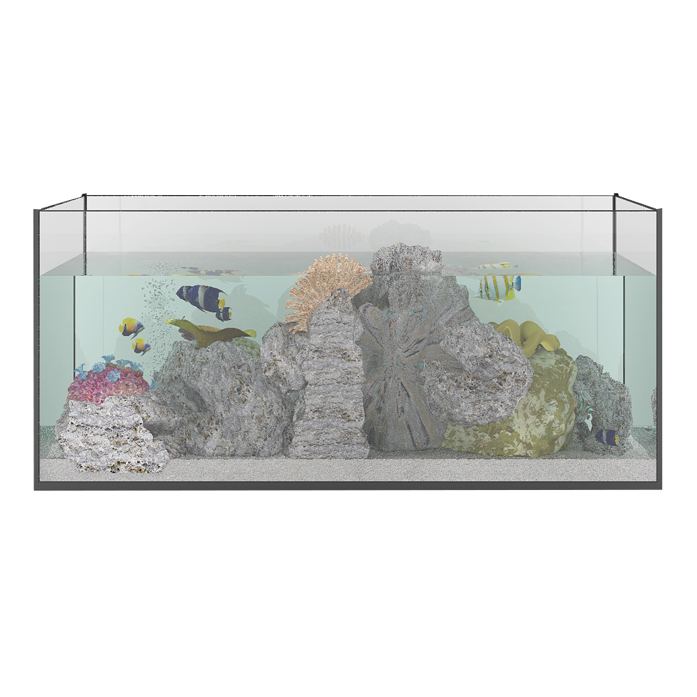
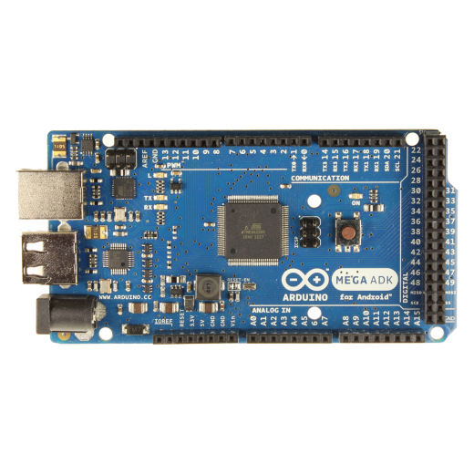

อุปกรณ์

ตู้ปลา

เซนเซอร์
วัดค่า DO
วัดอุณหภูมิ
วัดกรดเบส
วัดระดับน้ำ
Introducetion
ที่มาและความสำคัญ
พวกผมเป็นคนที่ชอบเลี้ยงปลาสวยงาม แต่ไม่มีเวลาที่จะดูแลทำให้ปลาของผมตายหมด และยังเสียเวลามาคอยเปลี่ยนน้ำให้เวลาตู้ไม่สะอาด จนเกิดเเนวคิดในการทำ ระบบตู้ปลา อัจฉริยะ นี้ได้มาจาก การเห็นปัญหาของการเลี้ยงปลาที่ไม่อาจจะสามารถรอดชีวิตแ
จากอายุน้อยๆได้ ละไม่มีเวลาเลี้ยงดู เช่น จำพวกปลาคาร์พ พวกผมจึงเกิดเเนวคิดในการทำ ตู้ปลาอนุบาลโดยระบบ จะเป็นการ วัดค่า ออกซิเจนในน้ำ อุณหภูมิ ค่ากรด-เบส เเละ ระดับน้ำของน้ำในตู้ปลา
โดยจากค่าที่วัดได้จากเซนเซอร์นี้ จะถูกส่งไปยัง web ให้เเสดงผลเเบบ real time จากนั้น ระบบ จะคำนวนในขั้นตอนต่อไปว่า
เราควรเปลี่ยนน้ำใหม โดยที่ไม่ต้องพะวงว่าเราจะเปลี่ยนน้ำตอนไหนและน้ำค่าเท่าไรถึงจะเหมาะกับปลาชนิดนี้มากที่สุด เพราะตู้ปลาจะส่งค่าบอกให้คุณรู้ถึงค่าต่างๆ ตู้ปลายังมีระบบเปลี่ยนน้ำอัตโนมัตทำให้เราโดยที่เราไม่ต้องมานั่งเปลี่ยนน้ำเองประหยัดเวลาให้เราทำอย่างอื่นได้อีกมากไม่ต้องคอยพะอีกด้วยวง
โดย
ค่าที่วัดได้ หากอยู่ในสภาวะปกติ
1.ค่า PH อยู่ในช่วง 6.5-8.5
2.ค่า DO 7-8 มิลลิกรัมต่อลิตร
3.ค่า อุณหภูมิ สูงกว่า 30 องศา
4.ระดับน้ำห้ามลดต่ำกว่า 60 % ของตู้ปลา
คณะผู้จัดทำ
นายกัมพล สายใหม
6310301011
นายนราธิป เธียรจินดากุล
6310301010
นายรังสิมันตุ์ เล่าเกษตรวิทย์
6310301029